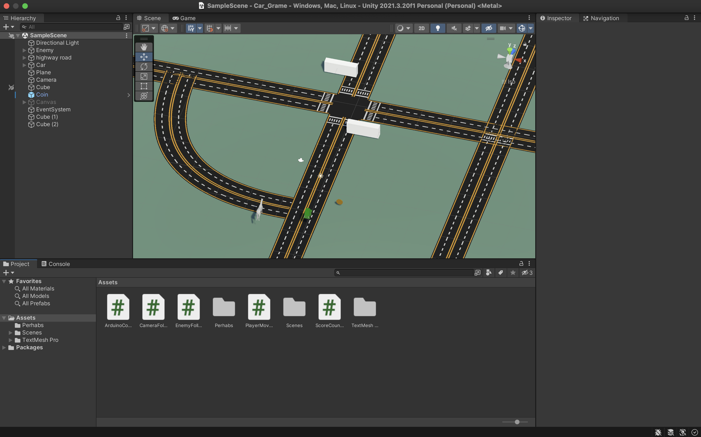
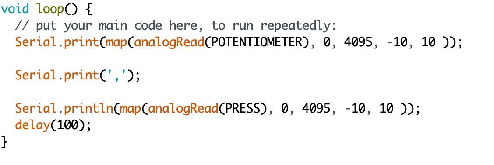
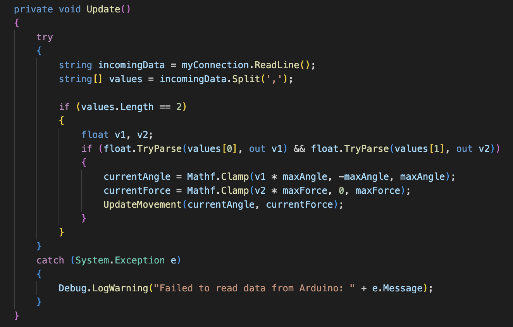
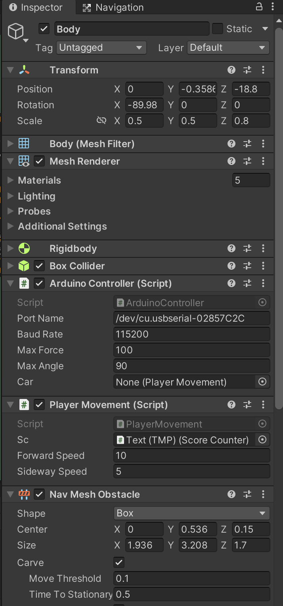
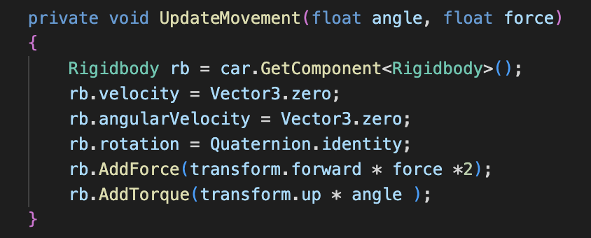
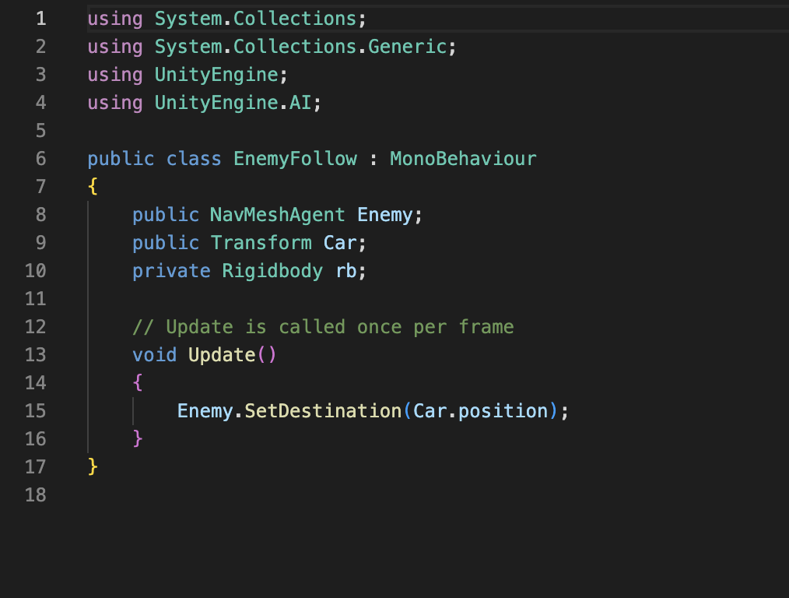
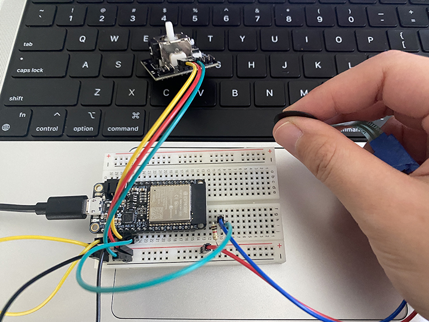

Unity Game with Arduino Controller I want to create a Unity world with a beautiful lake landscape and fireworks that
launch from the water. The scene should be visually impressive and immersive.
Additionally, I plan to add a button function so that users can turn
the fireworks on and off at their discretion.

Unity Game: Escape and Run away!

Problem 1 In Arduino, raw data is received through the force and joystick sensors,
but this data may not be suitable as a controller for a Unity game.
To make the data usable, the "map" function can be used to adjust the values to fit within the game's system.

Problem 2 One of the major problems I encountered in this project was that
my new MacBook Pro did not have the same Arduino port as my previous one.
This caused issues with receiving data from various sources. To address this problem,
I used the "Try if catch" command to select the correct data from the Arduino and transmit it to Unity.

Problem 3 I got a free 3D model of a car that I wanted to use in my project,
but I needed to add scripts and a rigidbody to make it work properly.
It took me some time to determine which 3D object was the main one to control the entire car.
Eventually, I added a rigidbody component to each 3D object and added the necessary
scripts to the car body to achieve the desired functionality.

Learning 1 While playing the game, I noticed that the force and angle of
the car were insufficient for effective control and evasion of the enemy.
To improve the gameplay, I modified the settings for the force and angle in Unity scripts.
This was a straightforward way to make the necessary adjustments.

Learning 2 I added an enemy horse to the game that would follow the player car and
block their escape route on the map. While implementing this feature in Unity,
I found that the script designed for pets was suitable for controlling the enemy horse's behavior.

Learning 3 Arduino has been set up so that the joystick sensor controls the x-axis movement of the player's car, while the force sensor controls the speed.Playing Video This is the final video showcasing the game being played with an Arduino controller.